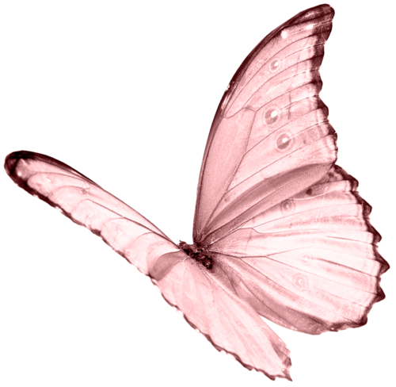
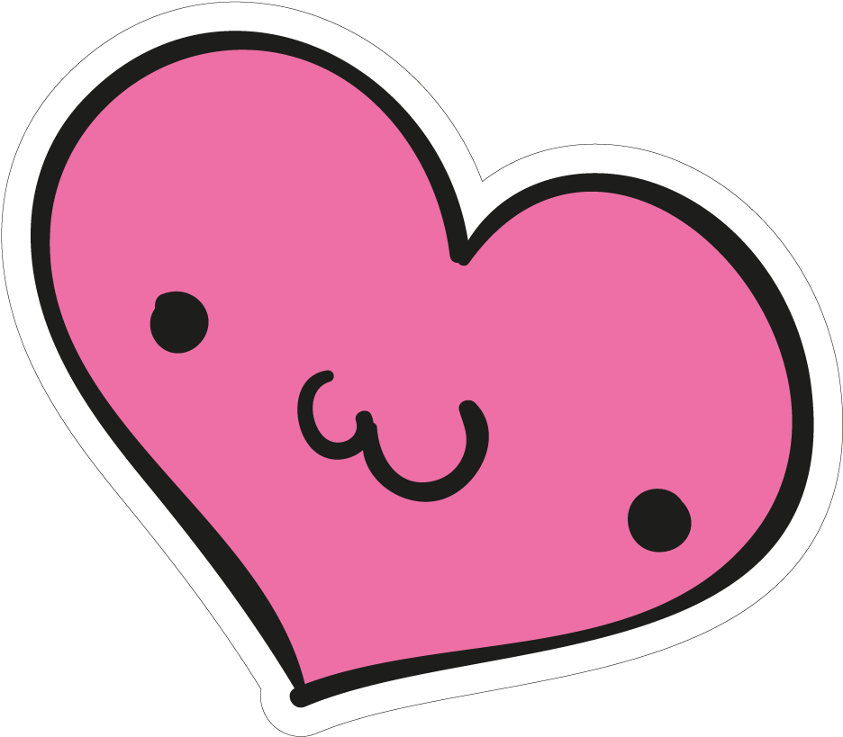
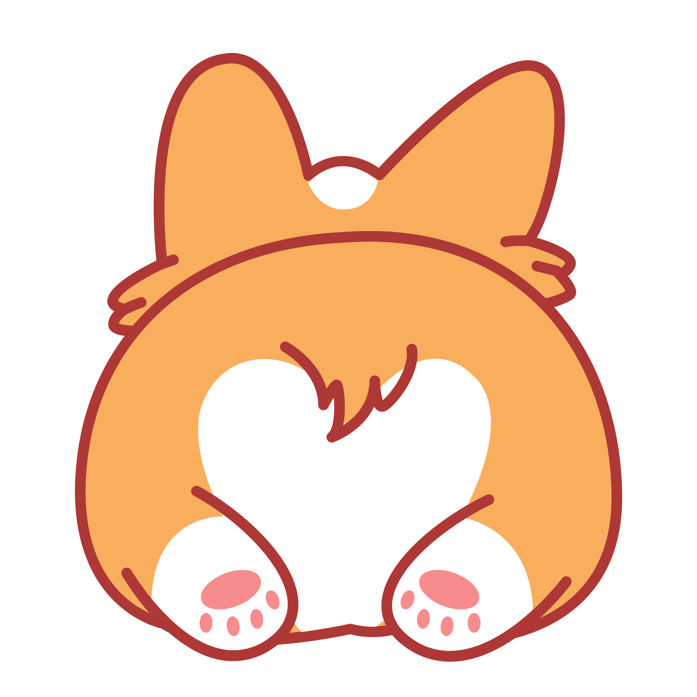

  
Every day with you is a gift.
A little place 🏠 where we celebrate our love story
Here are all the things I would do to keep your inner child 👧🏻 feel safe
I cherish every moment we spend together.
Things I Promise To Do
1. Always taking care of you 💆🏻♀️
2. Never lying to you 🙅🏻♂️
3. Always asking you before making any decision 🫡
4. Always keeping you safe and protected 🤺
5. Not making stupid and unnecessary arguments 🙅🏻♂️
6. Not invalidating you ever 🙅🏻♂️
7. Not being competitive with you on every little thing 🙅🏻♂️
8. Not inducing stress or negative emotions 🙅🏻♂️
9. By not creating double standards 🙅🏻♂️
10. By not manipulating you anymore 🙅🏻♂️
11. By acknowledging my actions and taking responsibility 🫡
12. By taking criticism and communicating openly 🫡
13. By being absolutely fine with anything you post on the internet 🛜
14. By being absolutely fine with coming online 🫡
15. By being totally fine with you talking to or being with your girl-friends 🫡
16. By being a supportive man of yours 24/7 🕺🏻
Thank you so much for being there <3
My cutest and everlasting Bunny🐰